11 декабря 2003 г. в Смоленске состоялась Центрально-российская конференция «Современная антимикробная терапия», в которой приняли участие более 450 человек из Белгорода, Брянска, Калуги, Новгорода, Тулы, Ярославля и стран СНГ - Беларуси и Украины.
12-14 декабря впервые в России прошли 26 образовательные курсы ESCMID «Роль клинической микробиологии в ведении пациентов с внебольничными инфекциями». Организаторами курсов в России выступили МАКМАХ и НИИАХ СГМА.
Центрально-российская конференция «Современная антимикробная терапия»
11 декабря в Актовом зале СГМА состоялась Центрально-российская конференция «Современная антимикробная терапия», в которой приняли участие более 450 человек из Белгорода, Брянска, Калуги, Новгорода, Тулы, Ярославля и стран СНГ - Беларуси и Украины. Организационная поддержка конференции была оказана Департаментом по здравоохранению администрации Смоленской области, Смоленской государственной медицинской академией (СГМА), НИИ антимикробной химиотерапии (НИИАХ СГМА), Научно-методическим центром Минздрава России по мониторингу антибиотикорезистентности (ЦМАР), МАКМАХ и Европейским обществом по клинической микробиологии и инфекционным болезням (ESCMID). Лекции были посвящены основным возбудителям внебольничных инфекций и вопросам их микробиологической диагностики, лечению пациентов с пневмониями, инфекциями мочевых путей, грибковыми инфекциями и тяжёлыми внебольничными инфекциями, а также перспективам вакцинопрофилактики инфекций и тяжёлому острому респираторному синдрому (ТОРС). По окончании конференции состоялась дискуссия, на которой докладчики выслушали и ответили на многочисленные вопросы аудитории.
26 образовательные курсы Европейского Общества по клинической микробиологии и инфекционным болезням (ESCMID) «Роль клинической микробиологии в ведении пациентов с внебольничными инфекциями»
Впервые в России 12-14 декабря 2003 г. состоялись 26 образовательные курсы ESCMID «Роль клинической микробиологии в ведении пациентов с внебольничными инфекциями». Организаторами курсов в России выступили МАКМАХ и НИИАХ СГМА.
С докладами на конференции выступили профессор Д. Корналия (Верона, Италия), Р. Кантон (Мадрид, Испания), Г. Бахар (Анкара, Турция), Л. Страчунский (Смоленск, Россия), Р. Козлов (Смоленск, Россия), А. Дехнич (Смоленск, Россия), Н. Климко (Санкт-Петербург, Россия), И. Смоленов (Москва, Россия).
В работе курсов приняли участие более 30 человек из России, Беларуси, Латвии, Нидерландов, Румынии, Турции, Украины, Эстонии.
За 3 дня работы курсов прозвучали 18 докладов, посвящённых актуальным вопросам эпидемиологии, диагностики и лечения внебольничных инфекций. Особое внимание уделялось программам мониторинга резистентности возбудителей внебольничных инфекций, была рассмотрена роль различных классов антибактериальных препаратов для лечения внебольничных инфекций. Отдельно рассматривались вопросы ведения пациентов с инфекциями верхних и нижних дыхательных путей, мочевых путей, дифтерии, а также диагностика и лечение грибковых инфекций и инфекций, вызванных проблемными возбудителями (MRSA).
Большой интерес аудитории вызвало обсуждение интересных клинических случаев, представленных участниками из Румынии и Эстонии.
Наряду с курсом лекций, участникам курсов была предложена культурная программа, включавшая торжественный ужин, вечер «Русская зима» и экскурсию по Смоленску.
По окончании курсов все участники получили сертификаты ESCMID и МАКМАХ и памятные подарки.
Следующие последипломные образовательные курсы ESCMID при участии Европейской рабочей группы по нозокомиальным инфекциям (ESGNI) «Инфекции в ОРИТ» состоятся 8-9 октября 2004 г. в г. Сочи.
МАКМАХ выражает благодарность компаниям bioMerieux, Lek, KRKA, Aventis, Ranbaxy за помощь в организации и проведении конференции и европейских курсов.
См. также: Список участников 26 образовательных курсов ESCMID
Фотографии
(выберите картинку для просмотра увеличенного изображения)
Конференция
Курсы
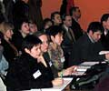
| Лекционный курс |
|
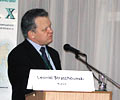
| Л. Страчунский
(Смоленск, Россия) |
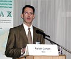
| Р. Кантон
(Мадрид, Испания) |
|
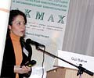
| Г. Бахар
(Анкара, Турция) |
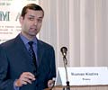
| Р. Козлов
(Смоленск, Россия) |
|
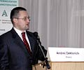
| А. Дехнич
(Смоленск, Россия) |
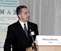
| Н. Климко
(Санкт-Петербург, Россия) |
|
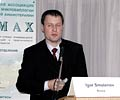
| И. Смоленов
(Москва, Россия) |
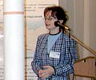
| Обсуждение клинических случаев
(Д. Талапан, Румыния) |
|
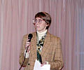
| Обсуждение клинических случаев.
Модератор сессии - О. Стецюк (Россия) |
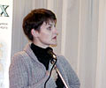
| Обсуждение клинических случаев
(М. Юрна, Эстония) |
|
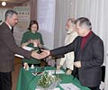
| Вручение сертификатов |
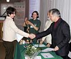
| Вручение сертификатов |
|
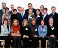
| Участники курсов |